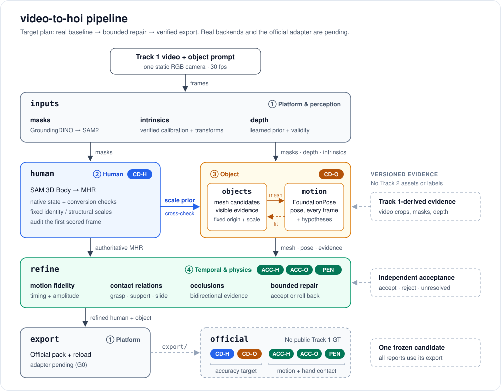

<meta charset="utf-8">
<meta name="viewport" content="width=device-width, initial-scale=1">
<title>video-to-hoi Team Hub</title>
<link rel="preconnect" href="https://fonts.googleapis.com">
<link rel="preconnect" href="https://fonts.gstatic.com" crossorigin>
<link rel="stylesheet" href="https://fonts.googleapis.com/css2?family=Mona+Sans:wght@500;600;700&display=swap">
<style>
:root {
  --canvas: #ffffff;
  --canvas-subtle: #f6f8fa;
  --canvas-inset: #f6f8fa;
  --border: #d1d9e0;
  --border-muted: #d8dee4;
  --fg: #1f2328;
  --fg-muted: #59636e;
  --link: #0969da;
  --neutral-muted: #818b981f;
  --btn-bg: #f6f8fa;
  --btn-hover: #eff2f5;
  --focus: #0969da;
  --module: #8250df;
  --m1: #57606a; --m2: #2563eb; --m3: #b45309; --m4: #047857; --mref: #fd8c73; --mstatus: #1a7f37;
  --font: -apple-system, BlinkMacSystemFont, "Segoe UI", "Noto Sans", Helvetica, Arial, sans-serif;
  --display: "Mona Sans", -apple-system, BlinkMacSystemFont, "Segoe UI", Helvetica, Arial, sans-serif;
  --mono: ui-monospace, SFMono-Regular, "SF Mono", Menlo, Consolas, "Liberation Mono", monospace;
}
@media (prefers-color-scheme: dark) {
  :root:not([data-theme="light"]) {
    color-scheme: dark;
    --canvas: #0d1117; --canvas-subtle: #151b23; --canvas-inset: #010409;
    --border: #3d444d; --border-muted: #3d444db3;
    --fg: #f0f6fc; --fg-muted: #9198a1; --link: #4493f8;
    --neutral-muted: #656c7633;
    --btn-bg: #212830; --btn-hover: #262c36; --focus: #1f6feb;
    --module: #ab7df8;
    --m1: #9198a1; --m2: #60a5fa; --m3: #f59e0b; --m4: #34d399; --mref: #f78166; --mstatus: #3fb950;
  }
}
:root[data-theme="dark"] {
  color-scheme: dark;
  --canvas: #0d1117; --canvas-subtle: #151b23; --canvas-inset: #010409;
  --border: #3d444d; --border-muted: #3d444db3;
  --fg: #f0f6fc; --fg-muted: #9198a1; --link: #4493f8;
  --neutral-muted: #656c7633;
  --btn-bg: #212830; --btn-hover: #262c36; --focus: #1f6feb;
  --module: #ab7df8;
  --m1: #9198a1; --m2: #60a5fa; --m3: #f59e0b; --m4: #34d399; --mref: #f78166; --mstatus: #3fb950;
}

* { box-sizing: border-box; }
body { background: var(--canvas); color: var(--fg); font: 14px/1.5 var(--font); }
a { color: var(--link); text-decoration: none; }
a:hover { text-decoration: underline; }
:focus-visible { outline: 2px solid var(--focus); outline-offset: -2px; border-radius: 6px; }
code { font: 85% var(--mono); padding: .2em .4em; border-radius: 6px; background: var(--neutral-muted); }
svg.oct { fill: none; stroke: currentColor; stroke-width: 1.5; stroke-linecap: round; stroke-linejoin: round; flex: none; vertical-align: text-bottom; }
.container { max-width: 1080px; margin: 0 auto; padding-inline: 32px; }
@media (max-width: 768px) { .container { padding-inline: 16px; } }

/* site navigation shared by all team pages */
.sitenav { background: var(--canvas-inset); border-bottom: 1px solid var(--border); }
.sitenav .container { display: flex; align-items: center; gap: 2px; overflow-x: auto; scrollbar-width: none; }
.sitenav a, .sitenav [aria-current] { flex: none; padding: 6px 10px; font-size: 12px; line-height: 20px; color: var(--fg-muted); white-space: nowrap; border-bottom: 2px solid transparent; }
.sitenav a:hover { color: var(--fg); text-decoration: none; }
.sitenav [aria-current="page"] { color: var(--fg); font-weight: 600; border-bottom-color: var(--module); }
.sitenav .sep { flex: none; width: 1px; height: 14px; background: var(--border); margin: 0 6px; }

.repohead { background: var(--canvas-subtle); border-bottom: 1px solid var(--border); padding-block: 16px; }
.repohead .top { display: flex; flex-wrap: wrap; gap: 12px; align-items: center; justify-content: space-between; }
.crumbs { display: flex; flex-wrap: wrap; align-items: center; gap: 6px; font-size: 20px; color: var(--fg-muted); min-width: 0; }
.crumbs a { color: var(--link); }
.crumbs strong { color: var(--fg); font-weight: 600; }
.pill { display: inline-flex; align-items: center; border: 1px solid var(--module); border-radius: 2em; padding: 0 8px; font-size: 12px; font-weight: 500; line-height: 20px; color: var(--module); }
.head-actions { display: flex; gap: 8px; flex-wrap: wrap; }
.btn { display: inline-flex; align-items: center; gap: 6px; height: 28px; padding: 0 8px; border: 1px solid var(--border); border-radius: 6px; background: var(--btn-bg); color: var(--fg); font: 500 12px/1 var(--font); cursor: pointer; white-space: nowrap; }
.btn:hover { background: var(--btn-hover); text-decoration: none; }

main { padding-block: 24px 56px; display: grid; grid-template-columns: minmax(0, 1fr); gap: 32px; }
main > section { min-width: 0; }
.intro { display: grid; gap: 12px; }
.intro p { margin: 0; max-width: 78ch; font-size: 16px; }
.facts { display: flex; flex-wrap: wrap; gap: 8px; }
.fact { display: inline-flex; align-items: baseline; gap: 6px; border: 1px solid var(--border); border-radius: 6px; padding: 4px 10px; font-size: 12px; color: var(--fg-muted); }
.fact b { color: var(--fg); font-weight: 600; font-variant-numeric: tabular-nums; }
h2 { font: 600 20px/1.25 var(--display); margin: 0 0 12px; padding-bottom: 8px; border-bottom: 1px solid var(--border-muted); text-wrap: balance; }

.cards { display: grid; grid-template-columns: repeat(auto-fill, minmax(min(100%, 300px), 1fr)); gap: 16px; }
.card { display: flex; flex-direction: column; gap: 8px; border: 1px solid var(--border); border-top: 3px solid var(--c); border-radius: 6px; padding: 14px 16px; background: var(--canvas); color: var(--fg); }
.card:hover { border-color: var(--c); text-decoration: none; background: var(--canvas-subtle); }
.card .name { display: flex; align-items: center; gap: 8px; font: 600 16px/1.3 var(--display); color: var(--fg); }
.card .name .num { color: var(--c); }
.card .lang { font: 500 11px/18px var(--font); color: var(--fg-muted); border: 1px solid var(--border); border-radius: 2em; padding: 0 6px; }
.card .desc { color: var(--fg-muted); margin: 0; }
.card dl { display: grid; grid-template-columns: auto 1fr; gap: 2px 10px; margin: auto 0 0; font-size: 12px; }
.card dt { color: var(--fg-muted); }
.card dd { margin: 0; }
.card .open { font-size: 12px; font-weight: 600; color: var(--link); }

figure { margin: 0; overflow-x: auto; }
figure img { display: block; width: 100%; min-width: 640px; max-width: 1000px; height: auto; border-radius: 16px; }
figcaption { margin-top: 8px; font-size: 12px; color: var(--fg-muted); }

.links { list-style: none; margin: 0; padding: 0; display: grid; grid-template-columns: repeat(auto-fill, minmax(min(100%, 320px), 1fr)); gap: 0 24px; }
.links li { display: flex; gap: 10px; align-items: baseline; padding: 8px 0; border-top: 1px solid var(--border-muted); }
.links a { font-weight: 600; }
.links span { color: var(--fg-muted); }
@media (max-width: 544px) { .crumbs { font-size: 16px; } .intro p { font-size: 15px; } }
</style>

<nav class="sitenav" aria-label="Team pages">
  <div class="container">
    <span aria-current="page">Team hub</span>
    <a href="https://claude.ai/artifact/U2vgULC1h3DurtZwyQRHS1" target="_blank" rel="noopener">Status</a>
    <a href="https://claude.ai/artifact/YXL887jxTTp7aQByCQvC6b" target="_blank" rel="noopener">Reference</a>
    <span class="sep" aria-hidden="true"></span>
    <a href="https://claude.ai/artifact/A9hrz9B8qed9WWqkFWpAHg" target="_blank" rel="noopener">① Platform</a>
    <a href="https://claude.ai/artifact/3jiAK6fqoNwqGtLwDKf3pk" target="_blank" rel="noopener">② Human</a>
    <a href="https://claude.ai/artifact/35K4apKHN75wiUuB8qxmq8" target="_blank" rel="noopener">③ Object</a>
    <a href="https://claude.ai/artifact/DUFpvGZmA2DyuU68afM7DV" target="_blank" rel="noopener">④ Physics</a>
  </div>
</nav>

<header class="repohead">
  <div class="container top">
    <div class="crumbs">
      <svg class="oct" viewBox="0 0 16 16" width="16" height="16" aria-hidden="true"><path d="M3 13.5V2.5A1.5 1.5 0 0 1 4.5 1H13v11H4.5A1.5 1.5 0 0 0 3 13.5Zm0 0A1.5 1.5 0 0 0 4.5 15H13v-3"/></svg>
      <a href="https://github.com/Seanwilliam2077/video-to-hoi" target="_blank" rel="noopener">video-to-hoi</a>
      <span>/</span>
      <strong>hub</strong>
      <span class="pill">Team hub</span>
    </div>
    <div class="head-actions">
      <button class="btn" id="lang-toggle" type="button" data-raw>中文</button>
      <a class="btn" href="https://github.com/Seanwilliam2077/video-to-hoi" target="_blank" rel="noopener">Repository</a>
    </div>
  </div>
</header>

<main class="container">
  <section class="intro" aria-label="Project">
    <p>Track 1 of the NVIDIA Video to Data (V2D) Challenge. From one static RGB video and a text description of the object, recover the person as MHR parameters, the object's metric mesh, and its 6D pose on every frame.</p>
    <p>Plan updated October 3, 2026: establish one real CARI4D baseline, repair only evidence-supported failures, and verify the exact official export. The submission kit is available; adapters and real runs are still pending.</p>
    <div class="facts">
      <span class="fact">Leaderboard freeze <b id="freeze-days">38 days</b></span>
      <span class="fact">Nov 4, 2026, 17:00 EST</span>
      <span class="fact">Metrics <b>CD-H · CD-O · ACC-H · ACC-O · PEN</b></span>
      <span class="fact">Data <b>Track 1 only</b></span>
    </div>
  </section>

  <section aria-labelledby="pages-h">
    <h2 id="pages-h">Pages</h2>
    <div class="cards">
      <a class="card" style="--c: var(--mstatus)" href="https://claude.ai/artifact/U2vgULC1h3DurtZwyQRHS1" target="_blank" rel="noopener">
        <span class="name">Project status <span class="lang" data-raw>中文</span></span>
        <p class="desc">Plain-Chinese progress for leadership and product: what is done, what is blocked, and what support we need.</p>
        <span class="open">Open the status page</span>
      </a>
      <a class="card" style="--c: var(--mref)" href="https://claude.ai/artifact/YXL887jxTTp7aQByCQvC6b" target="_blank" rel="noopener">
        <span class="name">Track 1 reference</span>
        <p class="desc">Challenge rules and scoring, the 30 Track 1 videos, development without ground truth, and our questions to the organizer.</p>
        <span class="open">Open the reference</span>
      </a>
      <a class="card" style="--c: var(--m1)" href="https://claude.ai/artifact/A9hrz9B8qed9WWqkFWpAHg" target="_blank" rel="noopener">
        <span class="name"><span class="num">①</span> <span>Platform &amp; perception</span></span>
        <p class="desc">Immutable observations, the real CARI4D adapter, official packing and reload checks, provenance, and independent diagnostics.</p>
        <dl><dt>Stages</dt><dd><code>inputs</code> <code>export</code></dd><dt>Metrics</dt><dd>all five, as gatekeeper</dd><dt>Branch</dt><dd><code>platform</code></dd></dl>
      </a>
      <a class="card" style="--c: var(--m2)" href="https://claude.ai/artifact/3jiAK6fqoNwqGtLwDKf3pk" target="_blank" rel="noopener">
        <span class="name"><span class="num">②</span> <span>Human</span></span>
        <p class="desc">Native MHR as the authoritative state, fixed identity and structural scales, verified conversion, and evidence-bounded root and hand correction.</p>
        <dl><dt>Stages</dt><dd><code>human</code></dd><dt>Metrics</dt><dd>CD-H</dd><dt>Branch</dt><dd><code>human</code></dd></dl>
      </a>
      <a class="card" style="--c: var(--m3)" href="https://claude.ai/artifact/35K4apKHN75wiUuB8qxmq8" target="_blank" rel="noopener">
        <span class="name"><span class="num">③</span> <span>Object</span></span>
        <p class="desc">Visible-surface mesh selection, a fixed mesh origin and scale, structured symmetry, and continuous poses with explicit occlusion hypotheses.</p>
        <dl><dt>Stages</dt><dd><code>objects</code> <code>motion</code></dd><dt>Metrics</dt><dd>CD-O</dd><dt>Branch</dt><dd><code>object</code></dd></dl>
      </a>
      <a class="card" style="--c: var(--m4)" href="https://claude.ai/artifact/DUFpvGZmA2DyuU68afM7DV" target="_blank" rel="noopener">
        <span class="name"><span class="num">④</span> <span>Temporal &amp; physics</span></span>
        <p class="desc">Motion timing and amplitude, simultaneous contact relations, bounded joint repair, independent acceptance checks, and rollback.</p>
        <dl><dt>Stages</dt><dd><code>refine</code></dd><dt>Metrics</dt><dd>ACC-H, ACC-O, PEN</dd><dt>Branch</dt><dd><code>physics</code></dd></dl>
      </a>
    </div>
  </section>

  <section aria-labelledby="pipe-h">
    <h2 id="pipe-h">Pipeline</h2>
    <figure>
      
      <figcaption>Six stages owned by four modules. Human geometry supplies a scale prior; bounded refinement preserves video evidence. The diagram is the target design, not an implemented real-model pipeline.</figcaption>
    </figure>
  </section>

  <section aria-labelledby="repo-h">
    <h2 id="repo-h">In the repository</h2>
    <ul class="links">
      <li><a href="https://github.com/Seanwilliam2077/video-to-hoi#model-weights-and-data" target="_blank" rel="noopener">Weights and data</a><span>Download commands for the Track 1 data and every model</span></li>
      <li><a href="https://github.com/Seanwilliam2077/video-to-hoi/blob/main/docs/development.md" target="_blank" rel="noopener">Developer guide</a><span>Setup, running the pipeline, validation and tests</span></li>
      <li><a href="https://github.com/Seanwilliam2077/video-to-hoi/blob/main/docs/design.md" target="_blank" rel="noopener">Design notes</a><span>Architecture and the official submission rules</span></li>
      <li><a href="https://github.com/Seanwilliam2077/video-to-hoi/blob/main/docs/track1-compliance.md" target="_blank" rel="noopener">Final requirements audit</a><span>Six requirements checked against the current implementation</span></li>
      <li><a href="https://github.com/Seanwilliam2077/video-to-hoi/blob/main/docs/evaluation.md" target="_blank" rel="noopener">Evaluation specification</a><span>Verified kit semantics, sources, and remaining questions</span></li>
      <li><a href="https://github.com/Seanwilliam2077/video-to-hoi/blob/main/docs/implementation-plan.md" target="_blank" rel="noopener">Implementation gates</a><span>Owners, acceptance evidence, ablations, and rollback</span></li>
      <li><a href="https://github.com/Seanwilliam2077/video-to-hoi/blob/main/docs/workflow.md" target="_blank" rel="noopener">Team workflow</a><span>How modules develop in parallel and merge</span></li>
      <li><a href="https://github.com/Seanwilliam2077/video-to-hoi/blob/main/docs/contracts.md" target="_blank" rel="noopener">Stage contracts</a><span>The files the stages exchange</span></li>
      <li><a href="https://github.com/Seanwilliam2077/video-to-hoi/tree/main/docs/track1-videos" target="_blank" rel="noopener">Track 1 video gallery</a><span>Previews of all 30 videos; open it from a clone</span></li>
    </ul>
  </section>
</main>

<script>
(() => {
  const freeze = Date.parse("2026-11-04T22:00:00Z");
  const days = Math.ceil((freeze - Date.now()) / 86400000);
  document.getElementById("freeze-days").textContent = days > 0 ? `${days} day${days === 1 ? "" : "s"}` : "Frozen";
})();
</script>

<script>
/* English/Chinese switch, the same layer as the other team pages: known strings
   swap to Chinese and back. Code and names marked data-raw are never translated. */
(() => {
  const ZH = {"Team hub": "团队主页", "Status": "项目进展", "Reference": "比赛资料", "Platform": "平台", "Human": "人体", "Object": "物体", "Physics": "物理", "Platform & perception": "平台与感知", "Temporal & physics": "时序与物理", "Repository": "仓库", "Project": "项目", "Pages": "页面", "Pipeline": "流水线", "In the repository": "仓库里的资料",
    "Track 1 of the NVIDIA Video to Data (V2D) Challenge. From one static RGB video and a text description of the object, recover the person as MHR parameters, the object's metric mesh, and its 6D pose on every frame.": "NVIDIA 视频转数据（V2D）挑战赛 Track 1。输入一段固定机位的 RGB 视频和一段物体文字描述，恢复人体（MHR 参数）、物体的度量网格，以及物体在每一帧的 6D 位姿。",
    "Leaderboard freeze": "排行榜冻结", "Frozen": "已冻结", "Nov 4, 2026, 17:00 EST": "美东时间 2026 年 11 月 4 日 17:00", "Metrics": "指标", "Data": "数据", "Track 1 only": "只用 Track 1",
    "Project status": "项目进展", "Plain-Chinese progress for leadership and product: what is done, what is blocked, and what support we need.": "给领导和产品看的中文进展：做完了什么、卡在哪里、需要什么支持。", "Open the status page": "打开进展页",
    "Track 1 reference": "Track 1 比赛资料", "Challenge rules and scoring, the 30 Track 1 videos, development without ground truth, and our questions to the organizer.": "比赛规则和评分、30 段 Track 1 视频、没有真值时怎么开发，以及我们问主办方的问题。", "Open the reference": "打开比赛资料",
    "Plan updated October 3, 2026: establish one real CARI4D baseline, repair only evidence-supported failures, and verify the exact official export. The submission kit is available; adapters and real runs are still pending.": "方案更新于 2026 年 10 月 3 日：先建立真实 CARI4D 基线，只修正视频证据支持的问题，并核验最终正式导出。官方提交工具已公布；适配和真实运行仍待完成。",
    "Immutable observations, the real CARI4D adapter, official packing and reload checks, provenance, and independent diagnostics.": "固定观测、真实 CARI4D 适配、正式打包和重载检查、来源追踪，以及独立诊断。",
    "Native MHR as the authoritative state, fixed identity and structural scales, verified conversion, and evidence-bounded root and hand correction.": "以原生 MHR 为唯一权威状态，固定身份和结构尺度，验证转换，并依据证据有限修正根部与手部。",
    "Visible-surface mesh selection, a fixed mesh origin and scale, structured symmetry, and continuous poses with explicit occlusion hypotheses.": "按可见表面选择网格，固定原点和尺度，明确对称性，并在连续轨迹中记录遮挡假设。",
    "Motion timing and amplitude, simultaneous contact relations, bounded joint repair, independent acceptance checks, and rollback.": "保持动作时序与幅值，表达同时存在的接触关系，有限联合修正，独立验收并支持回退。",
    "Stages": "阶段", "Branch": "分支", "all five, as gatekeeper": "全部五个，负责把关",
    "The video-to-hoi pipeline: six stages owned by four modules, from the Track 1 video to the export.": "video-to-hoi 流水线：从 Track 1 视频到导出，六个阶段分属四个模块。",
    "Six stages owned by four modules. Human geometry supplies a scale prior; bounded refinement preserves video evidence. The diagram is the target design, not an implemented real-model pipeline.": "六个阶段分属四个模块。人体几何提供尺度先验；有限修正应保持视频证据。图中是目标设计，真实模型流水线尚未实现。",
    "Final requirements audit": "最终要求审计", "Six requirements checked against the current implementation": "逐项核对六条要求与当前实现",
    "Evaluation specification": "评测规范", "Verified kit semantics, sources, and remaining questions": "已核实的工具包定义、来源及待确认问题",
    "Implementation gates": "实施关口", "Owners, acceptance evidence, ablations, and rollback": "负责人、验收证据、消融实验与回退",
    "Weights and data": "权重和数据", "Download commands for the Track 1 data and every model": "Track 1 数据和所有模型的下载命令",
    "Developer guide": "开发指南", "Setup, running the pipeline, validation and tests": "环境配置、运行流水线、验证和测试",
    "Design notes": "设计说明", "Architecture and the official submission rules": "架构和官方提交规则",
    "Team workflow": "团队流程", "How modules develop in parallel and merge": "各模块怎样并行开发、怎样合并",
    "Stage contracts": "阶段契约", "The files the stages exchange": "各阶段之间交换的文件",
    "Track 1 video gallery": "Track 1 视频预览", "Previews of all 30 videos; open it from a clone": "全部 30 段视频的预览；需从克隆的仓库打开"};
  const PATTERNS = [
    [/^(\d+) days?$/, (m) => `${m[1]} 天`],
    [/^([①②③④]) (.+)$/, (m) => ZH[m[2]] ? `${m[1]} ${ZH[m[2]]}` : null],
  ];
  const SKIP = "code, script, style, [data-raw]";
  const ATTRS = ["alt", "aria-label", "title"];
  const origText = new WeakMap();
  const origAttr = new WeakMap();
  let lang = "en";
  function tr(s) {
    const key = s.trim();
    if (!key) return null;
    let out = Object.prototype.hasOwnProperty.call(ZH, key) ? ZH[key] : null;
    if (out == null) for (const [re, f] of PATTERNS) { const m = key.match(re); if (m) { out = f(m); break; } }
    if (out == null) return null;
    return s.match(/^\s*/)[0] + out + s.match(/\s*$/)[0];
  }
  function walk(fn) {
    const w = document.createTreeWalker(document.body, NodeFilter.SHOW_TEXT | NodeFilter.SHOW_ELEMENT);
    for (let n = w.nextNode(); n; n = w.nextNode()) fn(n);
  }
  function translate() {
    walk((n) => {
      if (n.nodeType === 3) {
        if (!n.parentElement || n.parentElement.closest(SKIP)) return;
        const src = origText.has(n) ? origText.get(n) : n.data;
        const out = tr(src);
        if (out != null) { origText.set(n, src); n.data = out; }
      } else if (!n.closest(SKIP)) {
        for (const a of ATTRS) {
          if (!n.hasAttribute(a)) continue;
          const saved = origAttr.get(n) || {};
          const src = a in saved ? saved[a] : n.getAttribute(a);
          const out = tr(src);
          if (out != null) { saved[a] = src; origAttr.set(n, saved); n.setAttribute(a, out); }
        }
      }
    });
  }
  function restore() {
    walk((n) => {
      if (n.nodeType === 3) { if (origText.has(n)) { n.data = origText.get(n); origText.delete(n); } }
      else { const saved = origAttr.get(n); if (saved) { for (const [a, v] of Object.entries(saved)) n.setAttribute(a, v); origAttr.delete(n); } }
    });
  }
  const btn = document.getElementById("lang-toggle");
  function setLang(next, save) {
    lang = next === "zh" ? "zh" : "en";
    document.documentElement.lang = lang === "zh" ? "zh-CN" : "en";
    if (lang === "zh") translate(); else restore();
    btn.textContent = lang === "zh" ? "English" : "中文";
    btn.title = lang === "zh" ? "Switch to English" : "切换到中文";
    btn.setAttribute("aria-pressed", lang === "zh");
    if (save) { try { localStorage.setItem("v2hoi-lang", lang); } catch {} }
  }
  btn.addEventListener("click", () => setLang(lang === "zh" ? "en" : "zh", true));
  let initial = "en";
  try { initial = localStorage.getItem("v2hoi-lang") || "en"; } catch {}
  setLang(initial, false);
})();
</script>
